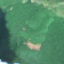
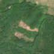

1,4 ha · Urșița, com. Voinești
văzută schimbată prima dată pe 20 iun. 2026


Autorizația cea mai apropiată nu acoperă tăierea: schimbarea cade în afara parcelei autorizate.
APV 2500105900370 · Ocolul Silvic Lunca Cetățuii, valabilă 6 apr. 2026 – 31 aug. 2026, la 81 m
Terenul: pădure de stat, după amenajamentul silvic publicat.
Ce se vede în poze: În «poza detaliată» zona marcată era acoperită de pădure deasă, iar în «după» apare un petic de pământ gol, roz-maroniu, în mijlocul pădurii care rămâne verde. Asta arată că arborii au fost tăiați pe o suprafață întinsă.